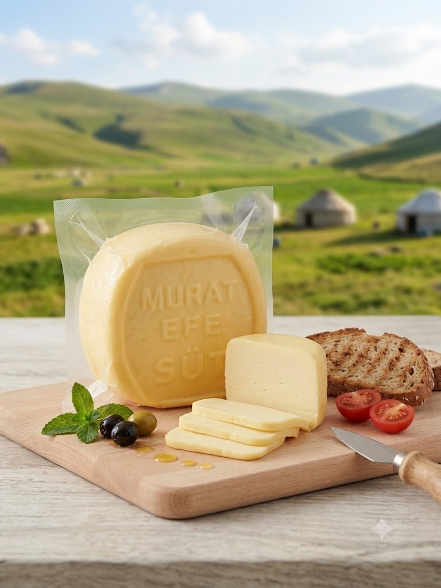

Tereyağlık Kaymak (1000 gr)
485 ₺
Doğadan Sofranıza
Sepetiniz boş.
Erzurum'un doğal yaylalarından elde ettiğimiz sütlerle ürettiğimiz yöresel lezzetlerimizi Türkiye'nin dört bir yanına güvenle ulaştırıyoruz. Ürünlerimizde hiçbir katkı maddesi bulunmamaktadır.
485 ₺
495 ₺
115 ₺
332,50 ₺
646 ₺
646 ₺
1.292 ₺
1.938 ₺
3.230 ₺
646 ₺
779 ₺
765 ₺
2.550 ₺
3.300 ₺
324 ₺
324 ₺
324 ₺
324 ₺
360 ₺
477 ₺
1.650 ₺
3.000 ₺
207 ₺

396 ₺
265,50 ₺
517,50 ₺
522 ₺
463,50 ₺
414 ₺
351 ₺
280 ₺
170 ₺
320 ₺
300 ₺
300 ₺
283,50 ₺
175 ₺
335 ₺
335 ₺
639 ₺
148,50 ₺
90 ₺
Stok Sorunuz
Stok Sorunuz
300 ₺
199,50 ₺
361 ₺
361 ₺
522,50 ₺
270,75 ₺
522,50 ₺
361 ₺
655,50 ₺
902,50 ₺
210 ₺
1.400 ₺
315 ₺
198 ₺
324 ₺
229,50 ₺
270 ₺
94,50 ₺
108 ₺
58,50 ₺
103,50 ₺
58,50 ₺
81 ₺
58,50 ₺
182,25 ₺
324 ₺
384,75 ₺
297 ₺
0 ₺
Ürün açıklaması burada yer alacak...